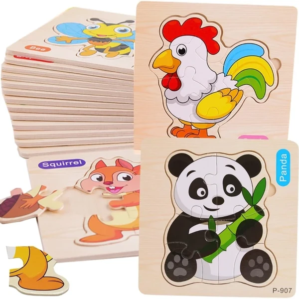
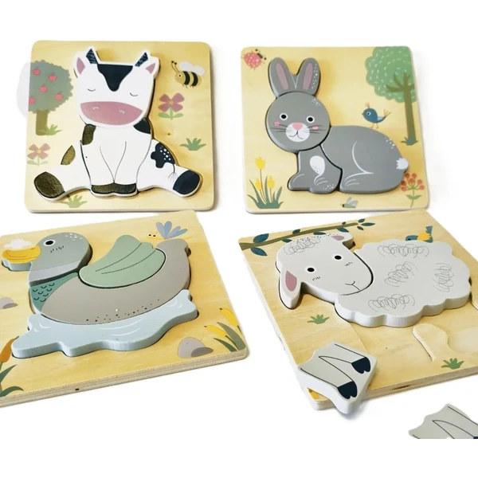
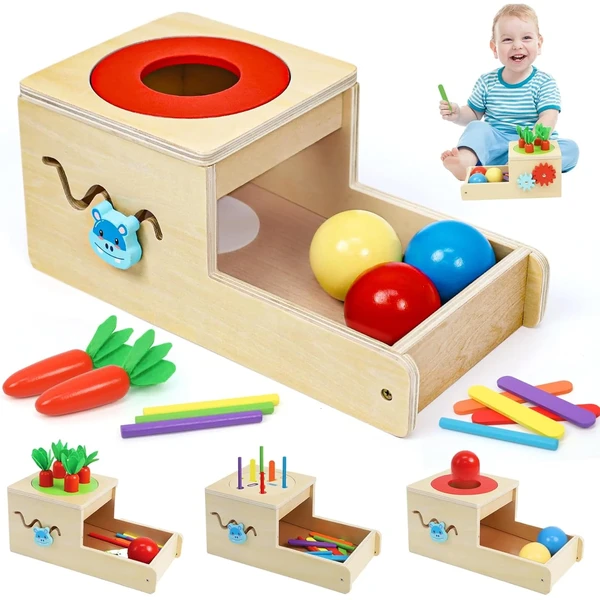
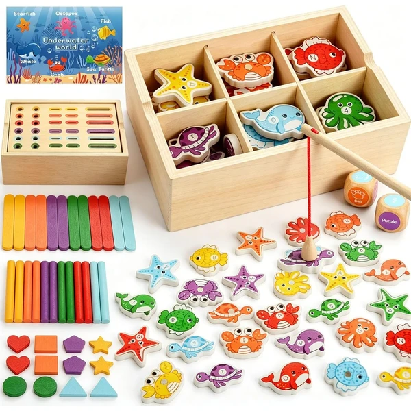
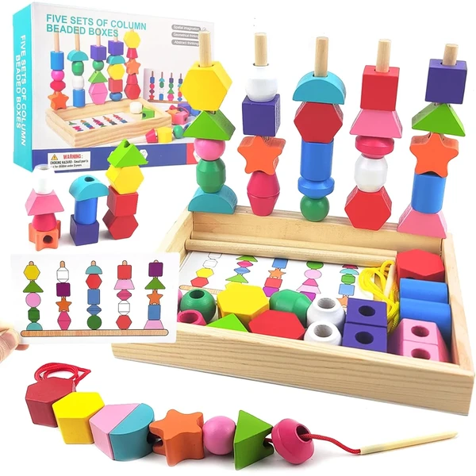
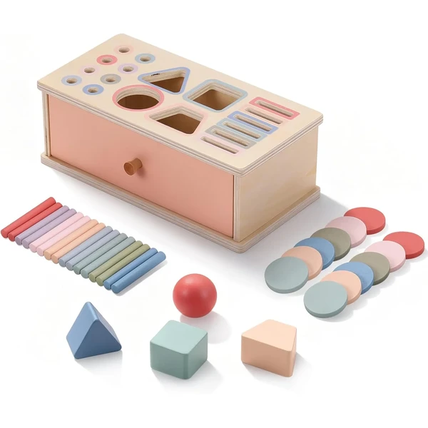
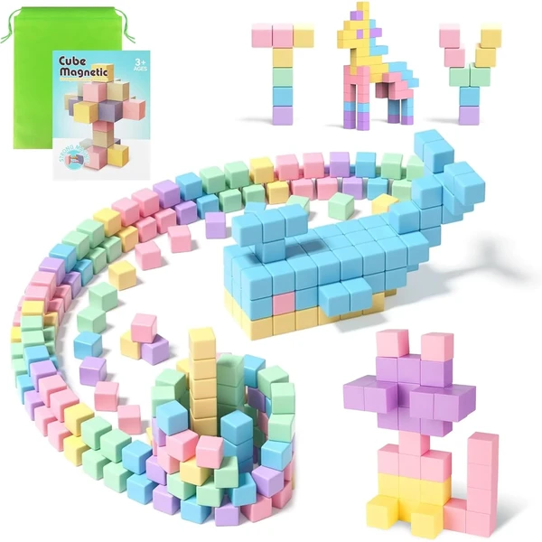
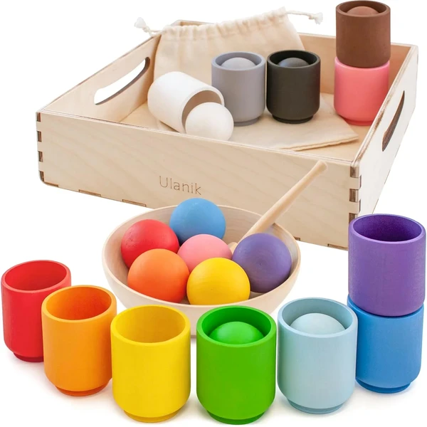
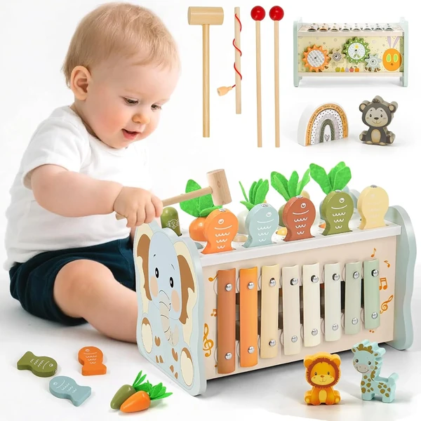

Pack de puzles de madera
Pack de puzles de madera con piezas grandes y fáciles de agarrar, pensado para introducir el encaje y el reconocimiento de formas en las primeras etapas del puzle.
⭐ ¿Por qué nos gusta?
- ✔ Piezas grandes, adaptadas a manos pequeñas.
- ✔ Varios diseños distintos en un mismo pack.
- ✔ Madera resistente al uso diario.
💬 Lo que más destacan las familias
Las familias destacan la relación calidad-precio y que da para varias sesiones de juego gracias a los diferentes diseños.
Edad recomendada: 2-3 años
Ver en Amazon

Puzles de 4 piezas con animales
Set de puzles sencillos de cuatro piezas con motivos de animales, pensado como primer contacto con el encaje y la resolución de problemas para los más pequeños.
⭐ ¿Por qué nos gusta?
- ✔ Solo 4 piezas, ideal para empezar con los puzles.
- ✔ Motivos de animales que despiertan curiosidad.
- ✔ Tamaño seguro para las primeras etapas.
💬 Lo que más destacan las familias
Se valora que sea un puzle realmente sencillo, pensado para los primeros intentos sin generar frustración.
Edad recomendada: 2-3 años
Ver en Amazon

Juguete de madera 6 en 1 LZDMY
Juguete de madera 6 en 1 que combina clasificación por colores con otras actividades educativas en un mismo set, siguiendo los principios del método Montessori.
⭐ ¿Por qué nos gusta?
- ✔ Seis actividades distintas en un solo juguete.
- ✔ Madera natural con acabados seguros.
- ✔ Favorece la clasificación por colores y formas.
💬 Lo que más destacan las familias
Las familias destacan que da para varias formas de juego distintas y que aguanta bien el uso diario.
Edad recomendada: 2-3 años
Ver en Amazon

Juego de pesca magnético Montessori
Juego de pesca magnético con piezas para clasificar por colores, presentado en una bolsa de lona fácil de transportar y guardar. Combina motricidad fina y reconocimiento de colores en un formato de juego dinámico.
⭐ ¿Por qué nos gusta?
- ✔ Combina pesca magnética y clasificación de colores.
- ✔ Bolsa de lona para transportarlo fácilmente.
- ✔ Favorece la motricidad fina.
💬 Lo que más destacan las familias
Se valora que sea un juego dinámico y fácil de llevar de viaje, gracias a la bolsa que incluye.
Edad recomendada: 2-3 años
Ver en Amazon

Set 3 en 1 clasificación y enhebrado
Juguete Montessori de madera 3 en 1 con veinticinco bloques geométricos y tarjetas de patrones para clasificar, apilar y enhebrar. Se guarda todo en una caja de madera, lista para volver a jugar.
⭐ ¿Por qué nos gusta?
- ✔ Combina clasificación, apilamiento y enhebrado.
- ✔ Incluye tarjetas de patrones para seguir modelos.
- ✔ Caja de madera para guardar todas las piezas.
💬 Lo que más destacan las familias
Las familias destacan que da para mucho tiempo de juego gracias a las distintas combinaciones posibles con las piezas.
Edad recomendada: 2-3 años
Ver en Amazon

Set 3 en 1 emparejar formas Starvortex
Juguete Montessori de madera 3 en 1 pensado para aprender a emparejar formas y colores, con un cajón propio para guardar todas las piezas ordenadas entre partida y partida.
⭐ ¿Por qué nos gusta?
- ✔ Tres actividades de emparejamiento en un set.
- ✔ Colores vivos que estimulan la vista.
- ✔ Cajón de almacenamiento incluido.
💬 Lo que más destacan las familias
Se valora tener un cajón propio para guardar las piezas, lo que facilita mantener el orden después de jugar.
Edad recomendada: 2-3 años
Ver en Amazon

Bloques de construcción 100 piezas Nene Toys
Set de cien bloques de madera en once formas distintas y tonos pastel, pensado para un juego de construcción abierto: apilar, alinear, combinar y crear libremente.
⭐ ¿Por qué nos gusta?
- ✔ Cien piezas en once formas distintas.
- ✔ Colores pastel suaves, poco recargados.
- ✔ Favorece el juego de construcción libre.
💬 Lo que más destacan las familias
Las familias destacan la cantidad de piezas y los tonos pastel, distintos a los bloques de colores más habituales.
Edad recomendada: 2-3 años
Ver en Amazon

Bloques magnéticos de construcción
Set de ochenta bloques magnéticos de colores para construir libremente, favoreciendo la creatividad, la concentración y la motricidad fina a través del juego de construcción.
⭐ ¿Por qué nos gusta?
- ✔ Piezas magnéticas fáciles de unir y separar.
- ✔ Favorece la concentración y la motricidad fina.
- ✔ Diseño seguro para manos pequeñas.
💬 Lo que más destacan las familias
Se valora lo fácil que resulta para el niño unir y separar las piezas por sí mismo gracias al imán.
Edad recomendada: 2-3 años
Ver en Amazon

Set de trasvase Ulanik bolas y vasos
Set Montessori de bolas y vasos de madera de tilo, con cuchara de trasvase y bolsa de lino incluidas. Un clásico para recoger, clasificar, emparejar, contar y trasvasar, todo guardado en una misma bandeja.
⭐ ¿Por qué nos gusta?
- ✔ Incluye cuchara y bolsa para el trasvase.
- ✔ Madera de tilo con acabado natural.
- ✔ Bandeja que mantiene las piezas ordenadas.
💬 Lo que más destacan las familias
Es uno de los sets de trasvase más comentados por la calidad de la madera y por lo bien organizadas que quedan las piezas.
Edad recomendada: 2-3 años
Ver en Amazon

Set 6 en 1 martillo y xilófono
Juguete de madera 6 en 1 que combina martillo, xilófono y otras actividades sensoriales en tonos suaves, pensado para jugar en grupo y estimular varios sentidos a la vez.
⭐ ¿Por qué nos gusta?
- ✔ Seis actividades sensoriales en un mismo set.
- ✔ Incluye martillo y xilófono.
- ✔ Madera resistente en tonos suaves.
💬 Lo que más destacan las familias
Las familias destacan que da para jugar entre varios niños a la vez, gracias a las distintas actividades que incluye.
Edad recomendada: 2-3 años
Ver en Amazon